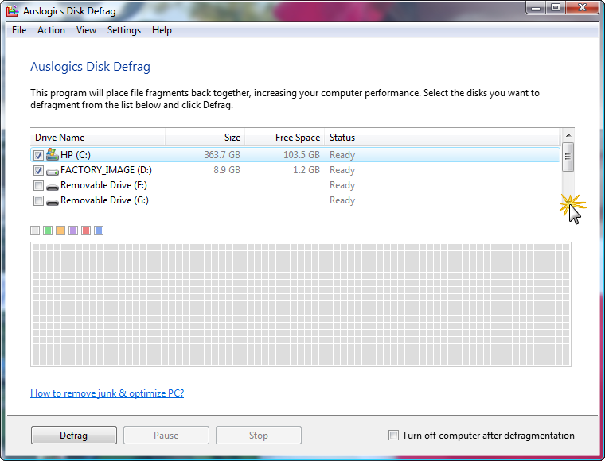
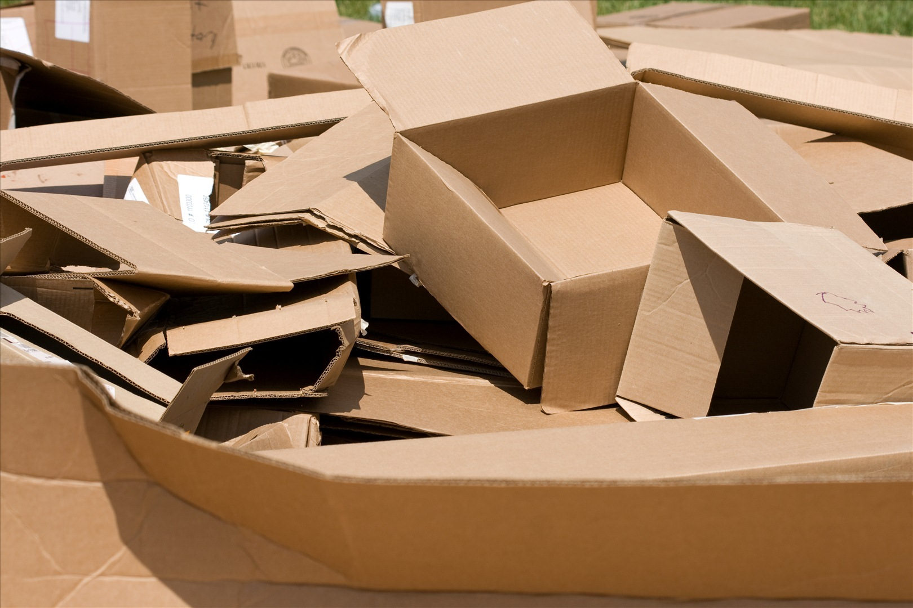
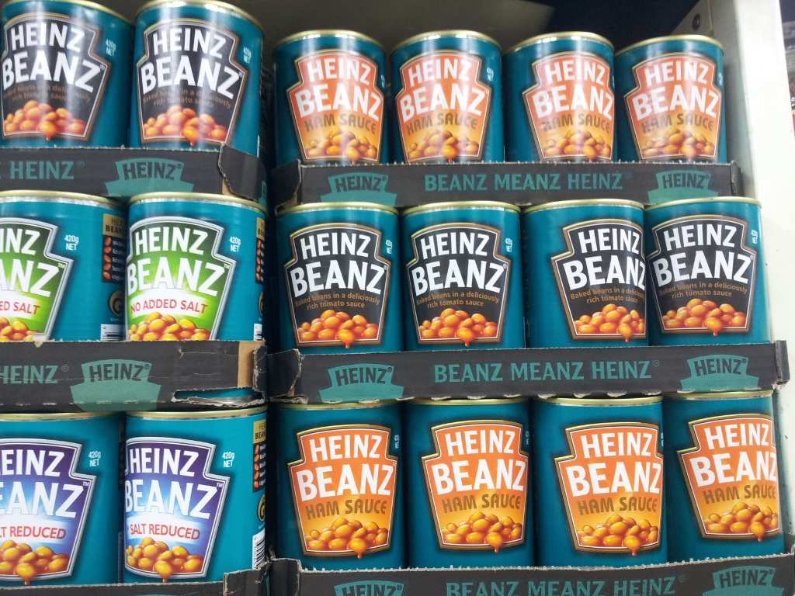

Your Site Should be Full of BEANs
Dave Hall
North West Drupal User Group
1 August 2012
Dave Hall

Source: Ben Dechrai

Core Blocks

Source: ayesamson
Core Blocks
Pros
- In core
- umm...
Cons
- Not portable
- Not very flexible
Boxes

Source: Anna Strumillo
Boxes
Blocks as config
Pros
- Features suppport
Cons
- Reverts can lose work
Project: http://drupal.org/project/boxes
BEANs
Source: Leolumix
BEANs

BEAN
Source: mrbean.co.uk
BEAN
Block
Entities
Aren't
Nodes
Project: http://drupal.org/project/bean
BEAN
Pros
- Fieldable blocks
- Blocks as entities
- Different types of blocks
- Easy conversion from core blocks & boxes
- Deployable
- Work like blocks
BEAN
Cons
- A little buggy
- Lack revision support
More Info
Demo
The future
Questions
?
Thanks
Connect
- Technocrat technocrat.com.au
- Twitter @skwashd
- Google+ gplus.to/skwashd
- Github github.com/skwashd
- LinkedIn linkedin.com/in/davehall
- Personal Website davehall.com.au
Download
github.com/skwashd/nwdug-beans
License

Drupal Sydney: Content Deployment by Dave Hall is licensed under a Creative Commons Attribution-NonCommercial-ShareAlike 3.0 Australia License.
Based
on a work at github.com.